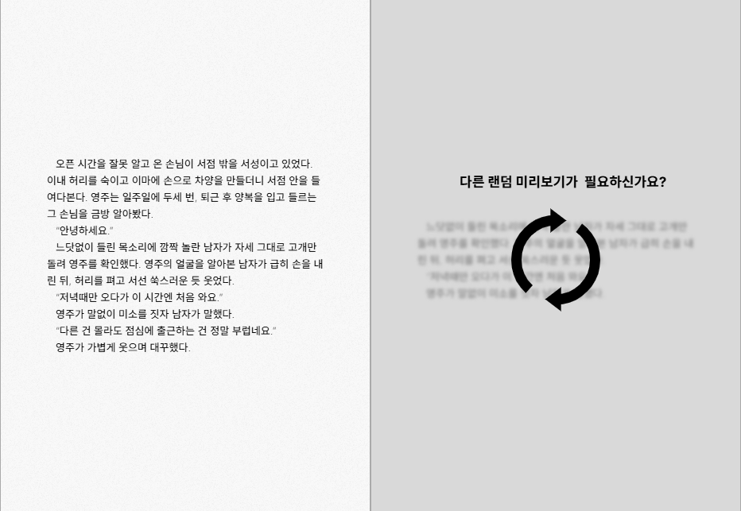
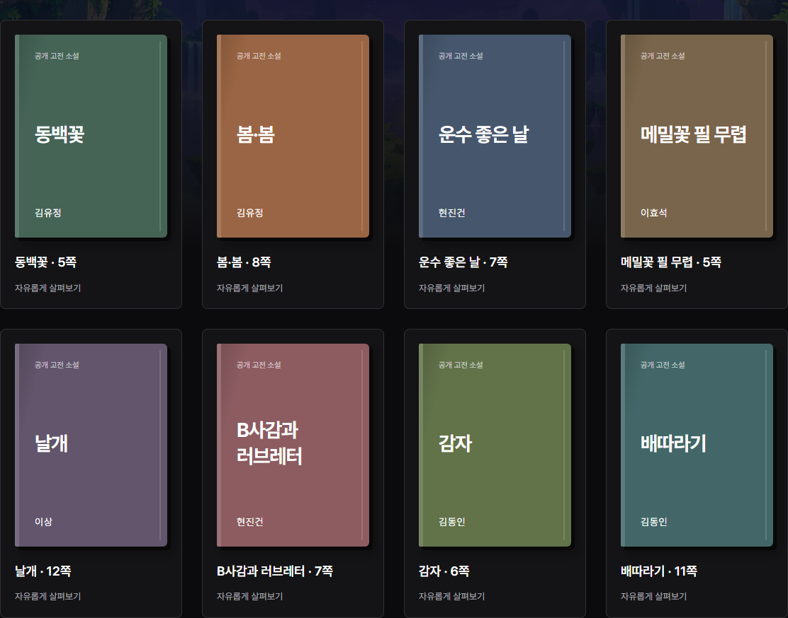
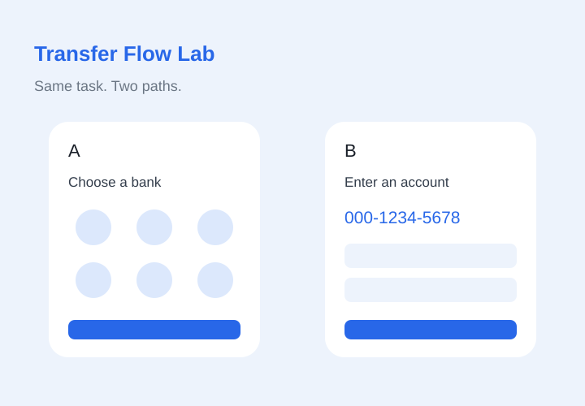
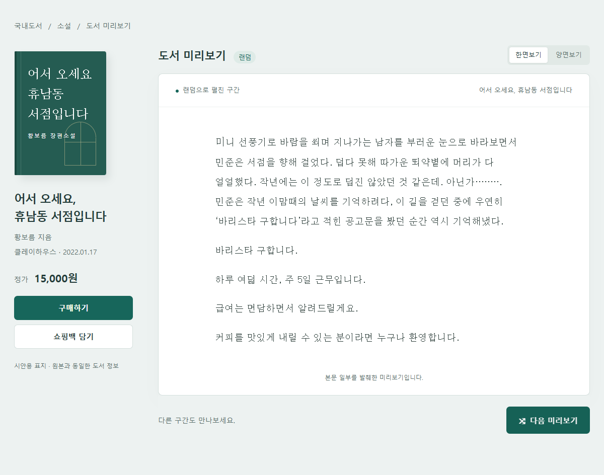
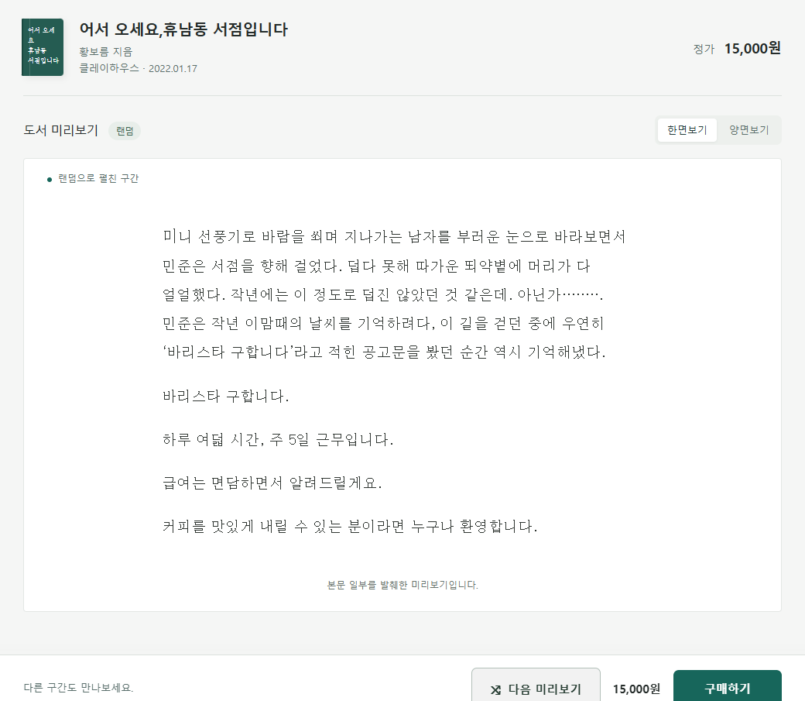
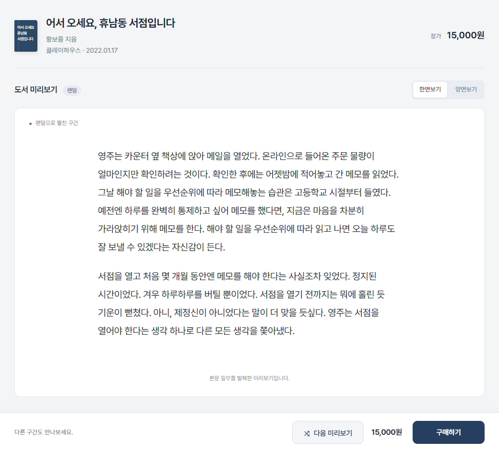

Random Preview
Explore a book through excerpts.
Read a passage, then move to the next preview.
Start Random PreviewChoose an activity. Explore books, reflect on your choices, or compare two transfer flows.

Explore a book through excerpts.
Read a passage, then move to the next preview.
Start Random Preview
Browse eight classic stories.
Choose a story and reflect through four interview questions.
Start Book Interview
Same transfer. Two different flows.
Try a randomly assigned flow, download your observations, and compare local results.
Start Transfer Flow LabChoose which passage to explore.
A separate choice-based mockup. The original Random Preview remains unchanged.
Start Choice Preview B ↗
Original saved revision with book details beside the reader.
A design-history mockup, not a separate research condition. Original A0 remains unchanged.
Open A1 revision ↗
Original saved revision with a compact header and bottom controls.
A design-history mockup, not a separate research condition. Original A0 remains unchanged.
Open A2 revision ↗
Latest saved revision with Pretendard and a navy-gray palette.
A design-history mockup, not a separate research condition. Original A0 remains unchanged.
Open A3 revision ↗